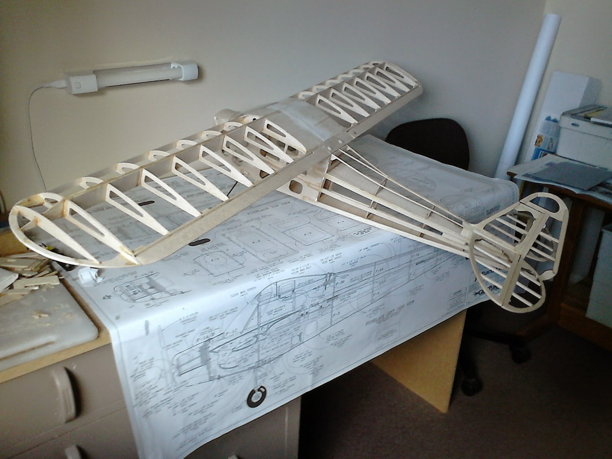

Radio Controlled Aircraft
I've spent parts of the past week assembling the major components of the Cub so that I now have something that looks like a plane, at least in skeletal form. However, it took quite a lot of effort to make the the parts fit; parts that had been built to the plan using die-cut parts!
Firstly the wing needed to be mounted. I was a little nervous about this since in involved drilling holes through the wing plate on the trailing edge and through the wing bolt plate. Then cutting a thread in the plate to accept the nylon wing bolts. Trimming the windshield and taping it to the fuselage was easier said than done. At the moment I don't know how I will glue it in place, since it seems to be a poor fit. I needed it in place so that I could fill any gaps in the wing cut-out on the leading edge of the wing and the fuselage side. But then I found that the wing, from front to back, was larger than the recess in the fuselage. The from of the wing has a dowel that locates in a hole in the front former and the trailing edge should fit in front of another former and drop onto the wing saddle. But it didn't! The wing ribs were die-cut and fitted the plan and the fuselage sides were made of die-cut parts and again fitted the plan. But I had to remove half the thickness of the rear former so as to make room for the wing. I also made a small allowance for the covering, which the instructions have not mentioned.
Then I found that the tailplane was longer than the space allowed between the former and the rear tip of the fuselage. Being loath to reduce the tailplane size, I added a small strip of balsa (about 1.5 mm) to the end of the fuselage. The fin also needed some trimming to make it fit properly on both the tailplane and the after deck of the fuselage.
So the next step is to mount the motor. Since I don't yet have one I can work on mending my IC trainer, the front of which has suffered from a heavy landing!